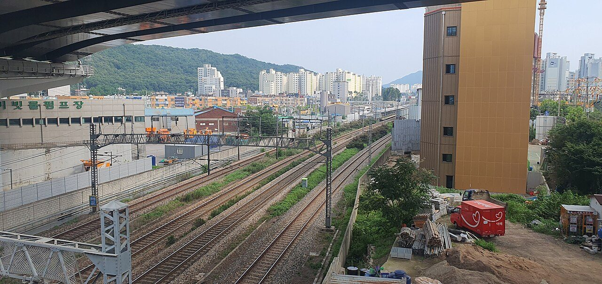
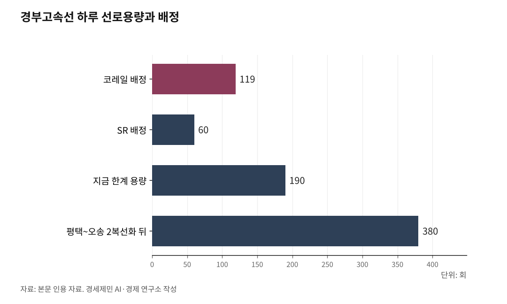

[127년 한국철도⑩] 꽉 찬 경부고속선, 하루 190회가 한계… 증설과 재설계, 둘 다 급하다
평택~오송 하루 190회로 포화… 2복선화로 380회 늘려야 한다
KTX 끊긴 자정~5시, 그 빈 창의 유효 작업은 150분뿐
일본 0~6시·중국 천창·프랑스 새벽 5시반 반환… 세계가 밤을 비운다
고속엔 화물 못 싣는다… 기존선 준고속으로 개량해 여객·화물 함께
AI경제저널=김갑봉 기자 | 인하대 해양AI융합센터 김갑봉 연구교수(물류학)│선로는 한 벌뿐인데 여객과 화물이 함께 쓴다. 게다가 고속철도는 새벽에 선로를 정비하느라 밤에는 열차를 세운다. 그 좁은 용량은 이미 바닥이다. 경부고속선 평택~오송 구간은 하루 190회로 꽉 찼다. 답은 둘이다. 고속선을 늘리고 기존선을 준고속으로 개량하는 투자를 서두르는 동시에, 여객·화물·정비가 다투는 시간표를 다시 짜야 한다.

하나의 선로, 셋이 다툰다
선로용량은 하루에 굴릴 수 있는 열차 횟수다. 이 자원은 이미 바닥이 보인다. 경부고속선의 병목인 평택~오송 구간은 편도 선로용량이 190회다. 코레일이 119회, SR이 60회를 배정받아 합쳐 179회, 사실상 다 썼다. 그래서 정부는 평택~오송 46.4km를 2복선화해 용량을 190회에서 380회로 늘린다.
이 좁은 용량을 여객과 화물이 나눠 쓴다. 거기에 밤이 더해진다. KTX와 SRT의 첫차는 새벽 5시, 막차는 자정이다. 자정부터 다섯 시간, 고속선에 여객이 없다. 그 빈 시간은 정비의 몫이다. 하나의 선로를 여객과 화물과 정비가 다툰다.

비어 보이는 밤, 실제론 150분
밤이 비었다고 온전히 쓰는 것은 아니다. 사람이 끊긴 밤에 사람이 선로로 내려간다. 레일을 갈고, 자갈을 다지고, 전차선을 손본다. 낮에 시속 300km로 달리는 길은 밤의 정비가 떠받친다.
그 창은 생각보다 짧다. 일본은 자정부터 5시까지 정비 시간을 두지만, 장비가 현장을 오가는 시간을 빼면 실제 작업은 150분에 그친다. 도호쿠 신칸센이 6시부터 자정까지 하루 27만명을 나르는 동안, 정비는 그 150분에 레일 교체까지 마쳐야 한다. 밤이 비어도 손을 댈 수 있는 시간은 두세 시간뿐이다.
세계가 밤을 비우는 법
빠른 철도는 어디서나 밤을 비운다. 일본 신칸센은 1964년 개통 이래 0시부터 6시까지 열차를 세운다. 2026년 8월 도쿄~오사카 첫 야간 신칸센이 시범 운행에 들어가지만, 그마저 자정부터 6시까지 기후하시마역에 세워 정비 창을 비운다.
중국은 '천창(天窗)'이라 부르는 정비 시간을 자정 넘겨 열어 새벽 3시 전에 닫는다. 프랑스는 더 촘촘하다. 하루 240~300회가 달리는 남동유럽 고속선(LGV SEE) 900km에서, 정비팀은 밤새 선로를 손본 뒤 새벽 5시30분에 되돌린다. 해마다 1000km를 갈고 1600개 공사를 벌이되, 정비의 90%를 고장 전 예방에 쓴다. 빠른 철도일수록 밤을 비운다. 그 빈 시간이 안전의 값이다. 고속선에 열차를 24시간 욱여넣을 수 없는 까닭이다.
고속은 여객, 기존선은 개량해 함께
고속전용선은 여객의 길이다. 화물열차는 시속 90~120km, 고속열차는 300km로 달린다. 속도가 두 배 넘게 벌어지면 한 선로에 섞을 수 없다. 느린 앞차와 빠른 뒤차 사이에 간격을 벌리는 만큼 용량이 준다. 고속선에 화물을 올리자는 말이 현실이 아닌 까닭이다.
답은 기존선에 있다. 낡은 일반선을 복선전철화하고 곧게 펴 준고속으로 끌어올리면, 여객과 화물이 함께 달릴 여지가 커진다. 준고속 여객(200~250km)과 화물의 속도차는 고속선만큼 크지 않아 한 선로에서 함께 달릴 수 있다. 1942년 단선으로 깔린 중앙선이 복선전철 고속화로 안동~영천 구간에서 시속 150km에서 250km로 빨라진 것이 그런 개량이다.
전용선을 따로 까는 길도 있다. 네덜란드는 로테르담항에서 독일 국경까지 160km를 화물만 달리는 베투베선(Betuweroute)으로 깔았다. 2007년 개통에 47억유로가 들었다. 전용선은 확실하지만 비싸다. 국토가 좁고 노선이 촘촘한 한국에는, 있는 기존선을 준고속으로 개량해 여객·화물이 함께 쓰는 편이 현실적이다.
간접효과, 그리고 용량의 재설계
고속철도는 화물을 직접 싣지 않고도 화물을 돕는다. 여객이 고속전용선으로 옮겨 타면, 기존선에 자리가 빈다. 그 자리를, 준고속으로 개량한 기존선이 여객과 화물로 함께 채운다. 부산~의왕 컨테이너 화물열차가 하루 1~2회에 그치는 현실은, 열어줄 여지가 아직 크다는 뜻이다.
결국 답은 둘을 함께 가는 것이다. 고속전용선을 늘려 여객을 빼는 투자와, 기존선을 준고속으로 복선전철화·직선화해 여객·화물을 함께 싣는 개량이다. 거기에 밤에는 정비로 선로를 지킨다. 시간과 속도와 노선을 나눠, 선로 한 벌을 알뜰히 쓰면서 새 용량도 더한다. 밀도의 경제다.
사람과 짐의 자리를 정했으니, 다음은 사람의 이동이다. 다음 편에서 공항과 철도를 견준다.
※ 이 기사는 AI 프로그램 클로드를 활용해 작성했습니다.
참고문헌
· 철도경제신문, "고속열차 하루 358회 오가는 '이곳'…지하에 철도터널 '또' 뚫는 이유", 2025. https://www.redaily.co.kr/news/articleView.html?idxno=12419
· 한국철도공사, "여객수송 — 열차시간표·노선도(첫차 5시·막차 자정)". https://info.korail.com/info/contents.do?key=857
· 한국철도공사, "물류수송 — 화물운송 및 운임(화물열차 90~120km/h)". https://info.korail.com/info/contents.do?key=873
· Plasser & Theurer, "Japanese precision — 자정~5시 정비 창, 유효 작업 150분". https://www.plassertheurer.com/en/today/stories/japanese-precision
· SoraNews24, "Japan launches first overnight Shinkansen bullet train between Tokyo and Osaka this summer", 2026.06.24. https://soranews24.com/2026/06/24/japan-launches-first-overnight-shinkansen-bullet-train-between-tokyo-and-osaka-this-summer/
· Dijon Actualités, "Sur la LGV Sud-Est Européenne, SNCF Réseau ouvre les coulisses d'une opération de maintenance stratégique", 2026.05.27. https://dijon-actualites.fr/2026/05/27/sur-la-lgv-sud-est-europeenne-sncf-reseau-ouvre-les-coulisses-dune-operation-de-maintenance-strategique/
· 中国国家铁路集团(중국국가철도집단), "走进夜间高铁保障一线(야간 고속철도 정비 현장)", 2021.08.29. (URL 재확인 불가로 표기 생략)
· Railway Technology, "Betuweroute Double-Track Freight Line". https://www.railway-technology.com/projects/betuweroute/
· 철도경제신문, "중앙선 도담-영천 250km/h 고속화 완료…'KTX-이음 제 속도 낸다'", 2025.12.30. https://www.redaily.co.kr/news/articleView.html?idxno=15110
· 한국산학기술학회논문지, "일반철도의 저속 및 고속열차 혼용구간 최소곡선반경 및 설정에 관한 연구", 21권 10호. https://www.kais99.org/jkais/journal/Vol21No10/vol21no10p42.pdf
· 국가물류통합정보센터(한국통합물류협회), "[물류통계포커스] 철도 물류산업 활성화를 위한 해외 각국의 동향과 시사점", 2023.06.29. https://www.nlic.go.kr/nlic/trendBookDt.action?command=VIEW&ref_seq=4660
사진 출처
· [대표사진] Aspere, "230813 경부선 기아대교.jpg", 위키미디어 공용, CC0, https://commons.wikimedia.org/wiki/File:230813_%EA%B2%BD%EB%B6%80%EC%84%A0_%EA%B8%B0%EC%95%84%EB%8C%80%EA%B5%90.jpg
※ 이 기사는 인공지능을 활용해 작성했습니다.
관련기사
- [127년 한국철도⑪] 빅3만 흑자, 11곳은 적자… 짧은 하늘길은 철도가 지운다
- [127년 한국철도⑫] 세계 3위 인천공항, 제2공항철도로 부산·목포까지 KTX 직결하라
- [신도대교개통] 다음은 도로철도 영종강화대교와 강화경제자유구역
- [127년 한국철도⑨] 북녘 철길 끊겼다… 화물열차 통째로 배에 실어 대륙으로
저작권자 © AI경제저널 무단전재 및 재배포, AI학습 및 활용 금지